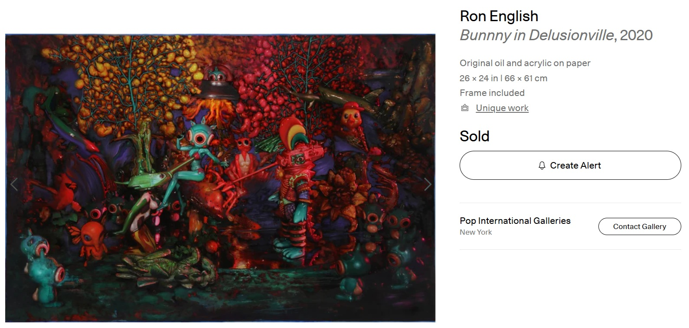
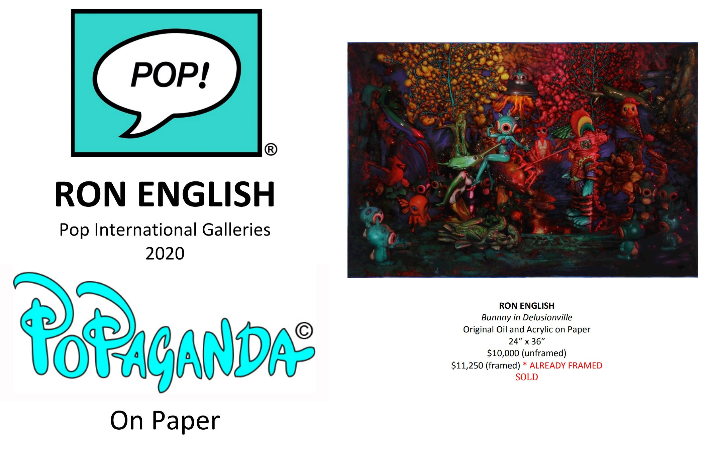
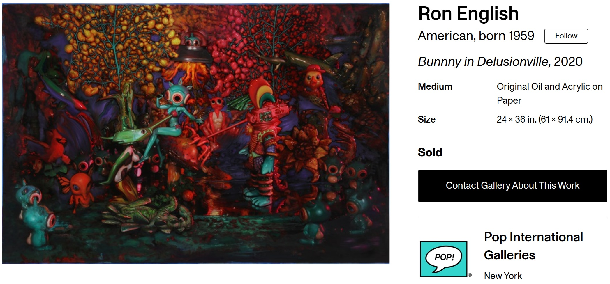

Exhibitions
POPaganda on Paper, Pop International Galleries, virtual exhibition, September 17–October 15, 2020.


Literature
POPaganda on Paper, Pop International Galleries, online exhibition catalogue, 2020.
StreetArtNews, “Ron English "POPaganda On Paper" A Virtual Exhibition Interview & Preview”, StreetArtNews, September 13, 2020.


Allison, “Down on the Bowery, ‘POPaganda on Paper’ with Ron English”, Bowery Boogie, 2020, p. 9.

Provenance
Private collection.
Notes
This work appears on Artsy’s artwork page as Bunnny in Delusionville, where it is listed as a 2020 original oil and acrylic on paper measuring 26 × 24 inches (66 × 61 cm), unique, with frame included.
Pop International Galleries’ POPaganda on Paper catalogue lists the work as 24 × 36 inches, which conflicts with the current catalogue record and the Artsy listing.
Artsy lists the work as hand-signed by the artist; no signature is visible on the front in the available documentation.
This work appears on Artsy’s artwork page as Bunnny in Delusionville, where it is listed as a 2020 original oil and acrylic on paper measuring 26 × 24 inches (66 × 61 cm), unique, with frame included.
Pop International Galleries’ POPaganda on Paper catalogue lists the work as 24 × 36 inches, which conflicts with the current catalogue record and the Artsy listing.
Ancillary Documentation





